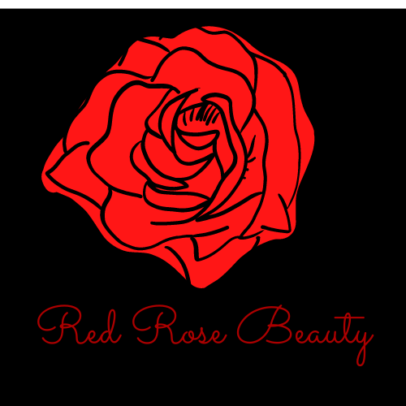

Today, we’re still all about empowering, educating, and entertaining women—the only difference? We’re doing it on a much larger scale than we
ever could have imagined. As Pure Romance continued to grow, Patty was joined by her son, CEO & President Chris Cicchinelli, in 2000. Together,
they’ve transformed Pure Romance into a $350 million company with 45,000 active Partners all over the world. Those Partners, located in the
United States, Canada, Puerto Rico, New Zealand, and Australia, all inspire women to enhance their intimate lives, take charge of their sexual
health, and just maybe, take a leap and start a life-changing career.